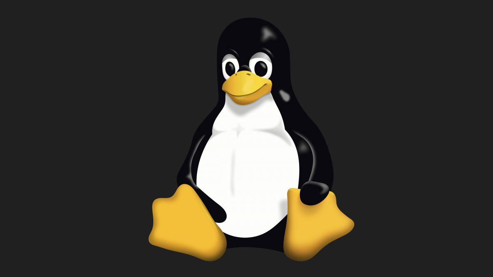

Vom studentischen Hobby-Projekt zum Fundament der digitalen Welt
An diesem Tag veröffentlichte der 21-jährige finnische Student Linus Torvalds eine scheinbar unscheinbare Nachricht in der Usenet-Newsgroup comp.os.minix, die Technikgeschichte schreiben sollte:
Diese extreme Bescheidenheit versteckte die Geburtsstunde einer der größten Software-Innovationen des 20. Jahrhunderts.

Linus Torvalds studierte damals Informatik an der Universität Helsinki. Weil er mit dem im Unterricht genutzten Minix-System unzufrieden war und sich kein kommerzielles UNIX-System leisten konnte, beschloss er kurzerhand, ein eigenes Terminal-Emulationsprogramm zu schreiben. Daraus entwickelte sich Stück für Stück ein ganzer Betriebssystem-Kernel.
Die erste Version war winzig. Doch statt den Code für sich zu behalten, stellte Torvalds ihn völlig kostenfrei ins Internet. Er lud die Community weltweit ein, Fehler zu melden und Verbesserungen beizutragen. Es war der Startschuss für kollaborative Open-Source-Entwicklung in einem nie zuvor gesehenen Ausmaß.
Linux war zwar nicht das erste freie Softwareprojekt, aber es traf zur richtigen Zeit auf den richtigen Nerv. Tausende Entwickler rund um den Globus begannen, in ihrer Freizeit den Code zu erweitern, Fehler zu jagen und neue Treiber zu schreiben – ohne direkte Bezahlung, getrieben vom Idealismus, dass transparente Zusammenarbeit zu besserer Software führt.
Diese Philosophie stellte die bis dahin strikt proprietäre Softwareindustrie auf den Kopf. Heute ist Open-Source-Software das unangefochtene Fundament für kritische Infrastrukturen weltweit.
Linux läuft auf über 99% der 500 schnellsten Supercomputer der Welt.
Als Basis von Android treibt Linux Milliarden Smartphones weltweit an.
Egal ob AWS, Google Cloud oder Azure: Die moderne Cloud atmet Linux.
Smarte Fernseher, Router und sogar die Mars-Rover der NASA setzen auf Linux.
Linus Torvalds (geb. 1969)
Der Schöpfer und bis heute der finale "Benevolent Dictator for Life" (gütiger Diktator auf Lebenszeit) des Linux-Kernels. Er koordiniert die Weiterentwicklung des Kerns bis heute.
Richard Stallman (geb. 1953)
Gründer des GNU-Projekts und der Free Software Foundation. Er schuf die philosophischen Grundlagen und die GPL-Lizenz. Erst die Kombination aus GNU-Werkzeugen und Linux-Kernel ergab das vollständige Betriebssystem (daher oft GNU/Linux genannt).
Alan Cox (geb. 1968)
Ein britischer Programmierer und Urgestein der Linux-Entwicklung. Er war jahrelang Torvalds’ rechte Hand, rettete den Kernel bei kritischen Updates und prägte die Community maßgeblich.